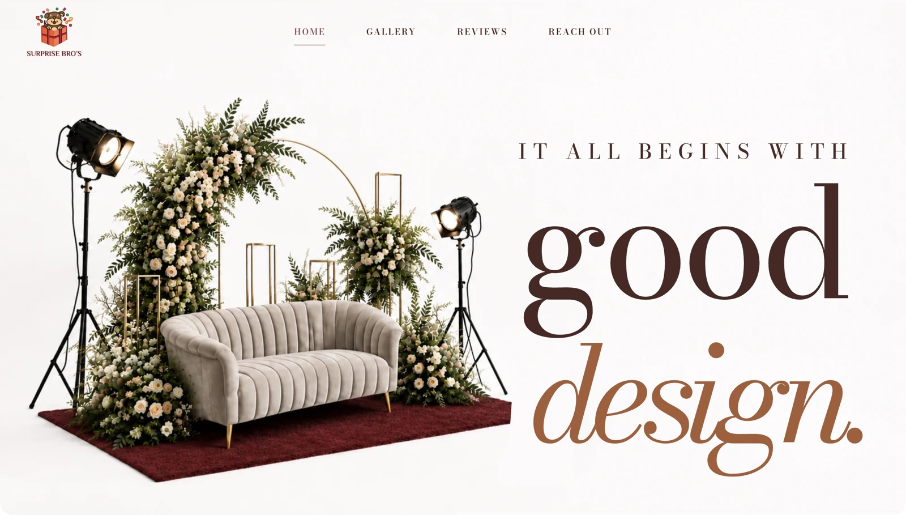

Move quickly. Keep the work familiar.
The brief was practical: bring the main jobs together quickly, without asking the team to learn a complicated new way of working. The starting point is the work itself: create a bill, organise an event, record attendance or review a month’s salary records.
We organised those tasks into four focused areas behind one home screen. Each person can enter the area they have access to. The owner has a clear route across the business, while the interface stays focused on the job in front of the user.
A workspace that follows the day.
- Billing
- Saved customers and catalogue items, tax calculations, invoice drafts and history, invoice numbering and branded PDF previews and downloads.
- Clients & events
- Client details, function dates, venues, inclusions, staff assignments, itemised costs and decor references together around the event.
- Attendance
- Check-in and check-out, attendance history, date and staff filters, leave totals, exports and qualifying overtime records.
- Salary
- Monthly salary records, explicitly manual leave deductions, optional gifts, revisions and CSV exports. The owner retains control over the final record.
The connections make it useful.
Operations and attendance use a shared staff roster. Client records can be added while an event draft remains in progress. Saved information is confirmed on the current screen, so the team can keep moving without repeatedly reloading the whole workspace.
Decor photos have their own protected upload flow, including preparation, progress and retry handling. Event costs and staff assignments sit with the function they belong to. The result is a clear place to return to when a busy day changes direction.
A public face for the celebrations.
The public website has a different job: help a prospective client picture the celebration. Wedding stages, birthdays, balloon decor, cakes and personal surprises are brought into a visual portfolio, followed by a clear path to start an enquiry.

All in one place, with room to grow.
The delivered workspace brings four recurring business functions into one entry point. It gives the team focused forms, saved records and access appropriate to their role, while keeping the familiar language of clients, events, attendance and billing.
The strength of the project is the connection between those ordinary tasks. A useful workflow should feel like a clearer version of the way the business already works.